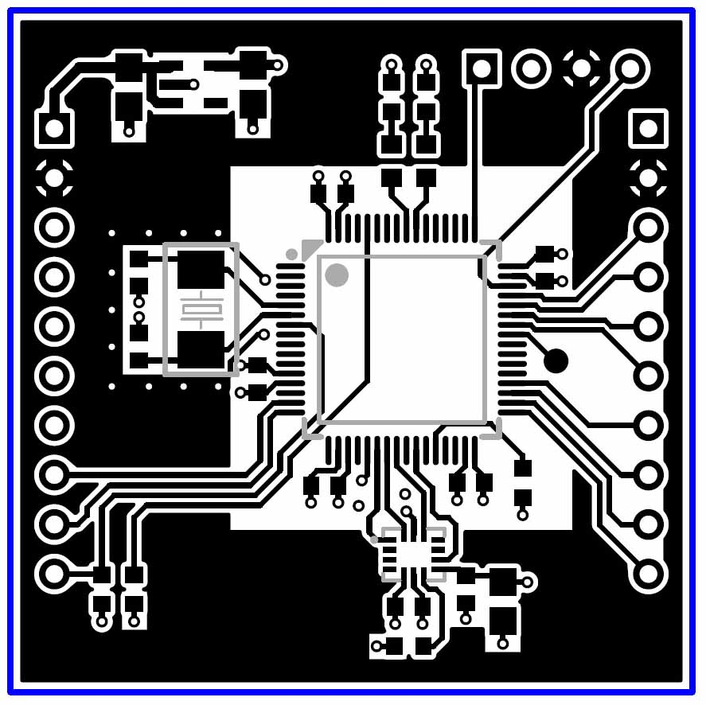
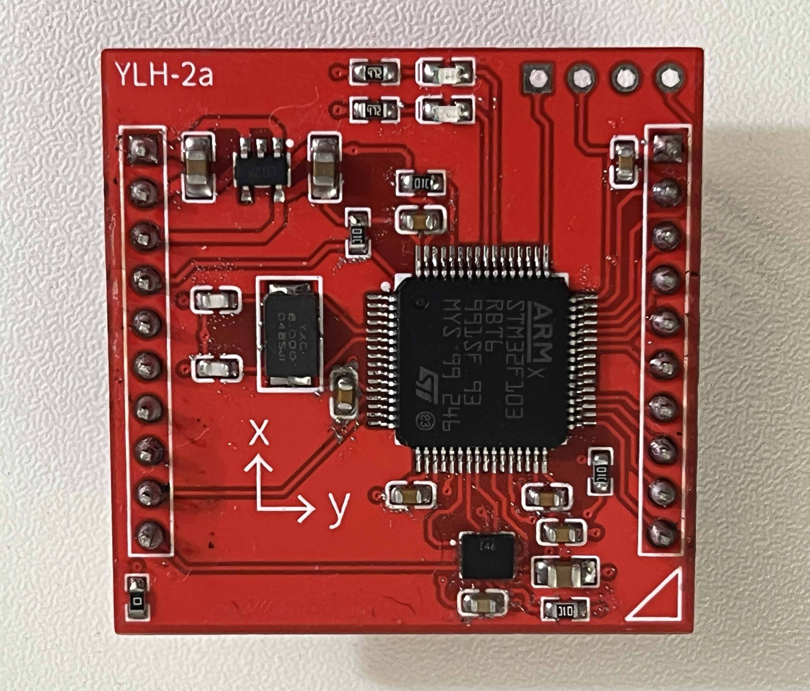
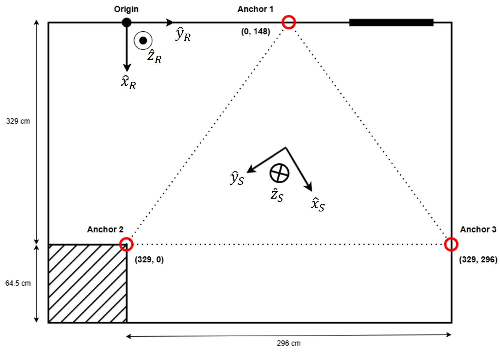
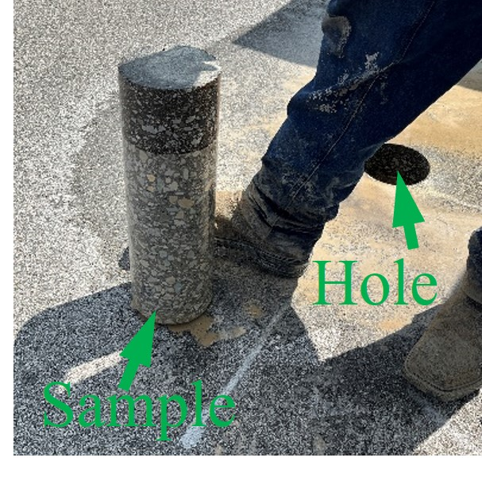
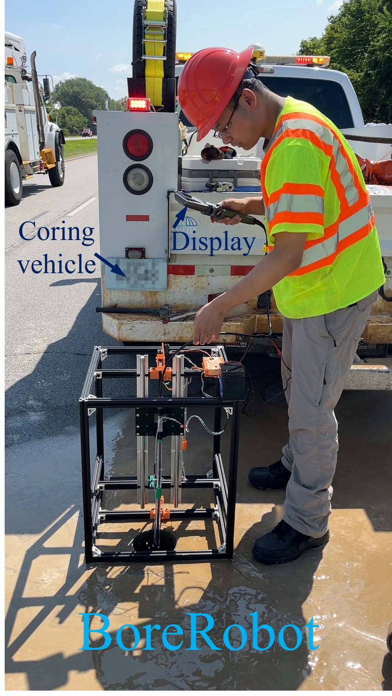
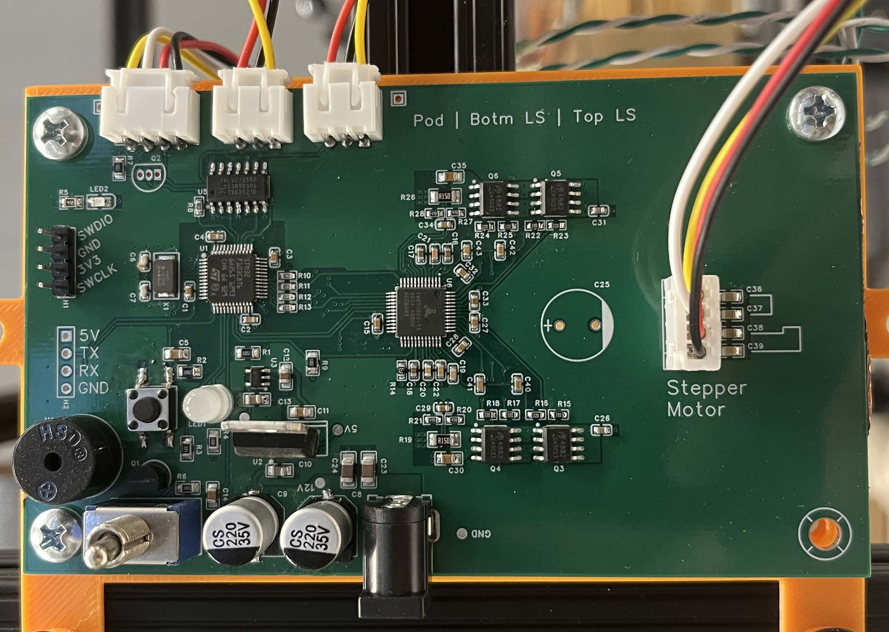
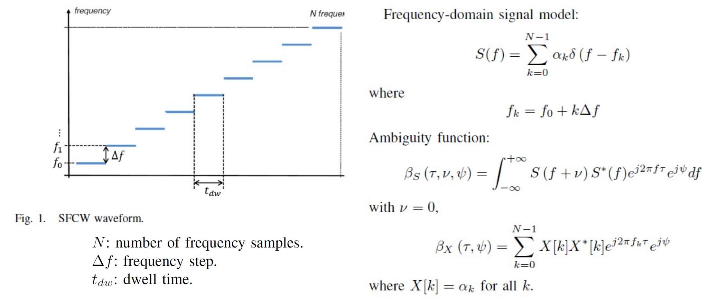
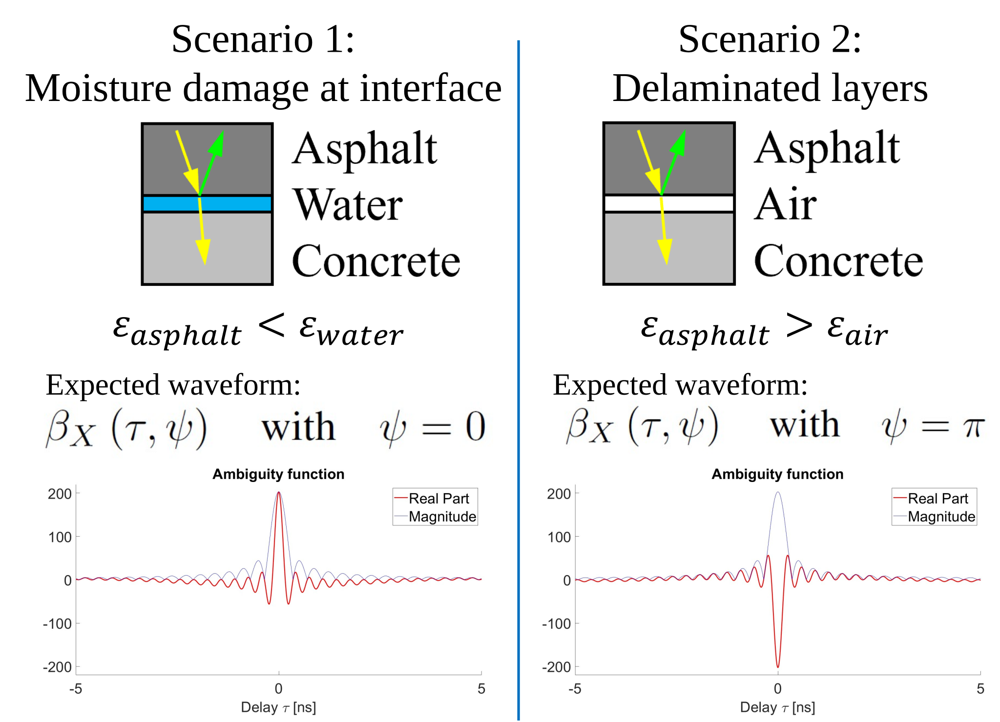
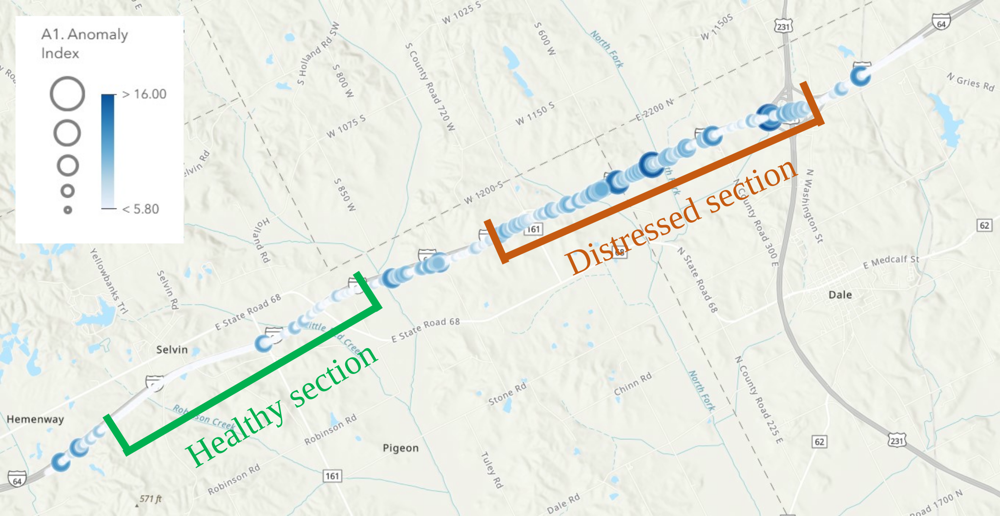
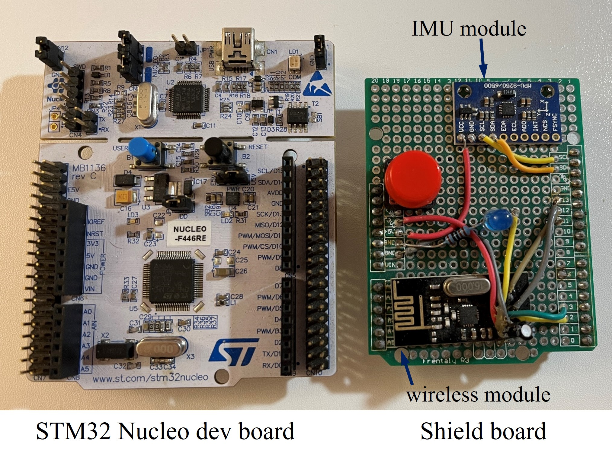

Bio
Aug. 2019 - May 2023 The Ohio State University (BS - ECE). Overall GPA: 3.58 (Cum Laude)
Aug. 2023 - May 2028 Purdue University (Ph.D. Advisors: David J. Love, James V. Krogmeier)
Gimbal UNLock (IMU-based pose estimation)
A versatile Attitude and Heading Reference System (AHRS) module suitable for pose estimation in VR/AR, Robotics, and Inertial Navigation applications.
Sep. 2024 - Jul. 2026. Individual Project.
Skills gained: STM32 programming (DMA, NVIC, SPI, CAN, UART, EXTI); Pose estimation algorithms; EMC engineering; PCB design & assembly (LGA-, LQFP-, 0603-, and 0805-footprint components); LS accelerometer calibration.
1. System design: ICM42670-P IMU + STM32F103RB microcontroller powered by 8MHz external crystal oscillator.
2. Achieved pose data report rate of 200 Hz by reducing CPU occupation with DMA and interrupts.
3. Improved existing AHRS algorithm to avoid the gimbal lock effect.
4. Developed hardware drivers (for STM32) to support multiple protocols: CAN, SPI, and UART. In SPI mode, the module emulates a SPI slave device.
5. Designed a complete set of virtual registers (inside STM32 controller) to handle commands received from hardware communication buses.
6. Implemented accelerometer calibration algorithm to reduce axes nonorthogonality error by 10 times.
7. Designed and built 4-layer PCB: survived indoor EM environment; Hardware cost controlled under $15.


Motion Impossible (Inertial + terrain navigation)
Cost-effective solution to indoor positioning based on hybrid motion tracking (Inertial Navigation + UWB trilateration).
Jan. 2026 - May 2026. Group Project, Role: Leader of the Inertial Navigation Subsystem (INS) development.
This is a course project for Purdue ECE 568: Embedded Systems.
Skills gained: engineering leadership; system engineering.
1. Performed effective communication, with the leader of UWB developers, to establish system architecture and development plan. All tasks completed in time with minor rework.
2. Presented, to team members, the basic concepts and mathematical model of pose estimation and inertial navigation. The presentation enabled non-ECE members to understand and paticipate in group discussions on INS-related topics.
3. Enabled a team member without a decent background on inertial sensor calibration to develop an ellipsoidal magnetometer calibration algorithm, by walking through the mathematical derivations with the team member.
4. Organized full-system testing/debugging, achieved system functionality within 8 hours.

BoreRobot (Electromagnetic Compatibility in robotics)
An automatic borescope robot for pavement layer inspection.
Jan. 2026 - ongoing. Individual Project.
Background & motivations: existing methods of pavement structure inspection, such as visual inspection of pavement samples (a.k.a. coring), does not utilize the complete information of the coring site. In case the sample is broken, the layered structure cannot be told from the sample itself. This project introduced a robot driving a borescope camera into the hole produced by the process of coring, enabling the inspection to the side-wall of the borehole. Even if the core sample is sheered/broken, the images collected from the side-wall still supports the structure analysis.

Skills gained: EMC engineering; PCB design & assembly (TQFP-, LQFP-, and 0603-footprint components); PCB testing (MOSFET bridge motor driver); STM32 programming (SPI, EXTI); SolidWorks structure design.
1. Designed mechanical structure of the machine (100% utilization rate of sliding rail; max. range 18 in., covering all possible pavement thickness).
2. Component selection: STM32F103C8 microcontroller + TMC5160A-TA stepper motor driver IC + AO4882 MOSFET bridge.
3. Designed STM32 firmware to implement motor homing, limit switch debouncing, and borehole-bottom detection.
4. Designed, built, and debugged two PCB prototypes (4-layer) to obtain a functional version.
5. Field test: the system survived the EM environment of highway roadside.


P-BYPAV (Ground Penetrating Radar signal/image processing)
Ground Penetrating Radar (GPR) signal/image processing software for non-destructive pavement damage detection & early warning, at network-level.
Aug. 2023 - ongoing. Sponsored Research Project.
Background & motivations: Ground Penetrating Radar (GPR), as a non-destructive evaluation equipment, is powerful in terms of detecting early-stage pavement damage, which usually propagates from layer interfaces to the surface. When properly processed, the data provides critical insights into pavement structural condition, assisting repair and maintenance decision-making.
Skills gained/topics covered: Deep Learning in Python (ResNet, YOLO, MLP); Radar signal modeling; Geo referencing systems; Pavement coring; Pavement deflection measurement; Windows CMD programming.
1. Established mathematical model of the Stepped Frequency Continuous Wave (SFCW).
2. Developed hypotheses explaining the target characteristics captured by the radar system.
3. Organized field data collection and secondary evaluation (deflection, coring). The hypothesis was supported by the ground truth results.
4. Developed a two-stage object detection/classification framework for layer interface damage detection and classification. This framework is able to classify atypical symmetric GPR patterns rarely discussed in previous literature. [journal paper 1]
5. Prototyped a software providing network-level insights into pavement condition by summarizing the image-level detection/classification results into a standardized and geographically-referenced condition index. [journal paper in-progress]
This software enables decision makers without prior GPR knowledge to understand the condition of an in-service highway. The output format is compatible with ArcGIS.




Smart-FPV (IMU head tracking)
A wireless image transmission system with head-tracking feature, for UAV/Unmanned Vehicle applications.
Dec. 2019 - Jun. 2022. Individual Project.
Skills gained: Arduino programming; STM32 programming (I2C, SPI); Pose estimation algorithms; Frequency Hopping based communication recovery; SolidWorks structure design.
1. The 1st prototype: Arduino UNO + MPU-9250 IMU module + nRF24L01 2.4GHz wireless module.
2. Developed I2C driver (for MPU-9250) and SPI driver (for nRF24L01).
3. Implemented basic pose estimation algorithm.
4. Developed an adaptive frequency-hopping communication recovery algorithm to avoid interference from Wi-Fi and Blue Tooth.
5. Transplanted the Arduino project to STM32 platform.

Publications
Journal
- F. Han, M. A. Notani, S. Cho, D. A. Harris, J. E. Haddock, and J. V. Krogmeier, “Parallel B-Scan YOLO Plus A-Scan Voting Method for Pavement Integrity Assessment Based on Three-Dimensional Ground-Penetrating Radar Data,” Transportation Research Record, vol. 2679, no. 7, pp. 716–731, Jul. 2025, doi: 10.1177/03611981251328987.
Conference
- F. Han, M. A. Notani, S. Cho, D. A. Harris, J. E. Haddock, and J. V. Krogmeier, “Parallel B-Scan YOLO Plus A-Scan Voting Method for Pavement Integrity Assessment Based on Three-Dimensional Ground-Penetrating Radar Data,” Transportation Research Board, Washington D.C. 2025. [Oral Presentation]
- F. Han, M. A. Notani, S. Cho, D. A. Harris, J. E. Haddock, and J. V. Krogmeier, “Automated Feature Fencing in Three-dimensional Ground-Penetrating Radar Point Clouds by Clustering Two-dimensional Bounding Boxes,” Transportation Research Board, Washington D.C. 2026. [Oral Presentation]